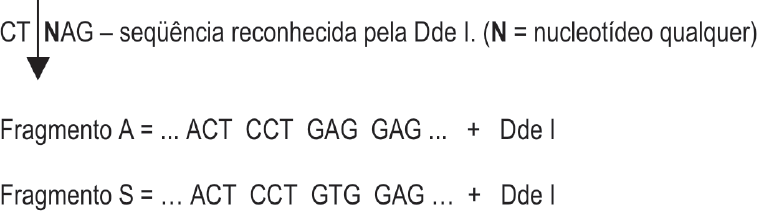

As endonucleases de restrição são enzimas que reconhecem uma seqüência específica de nucleotídeos do DNA e o digerem (cortam) num ponto determinado. O emprego dessas enzimas no diagnóstico de doenças infecciosas, neoplásicas e hereditárias vem crescendo dia a dia, e está preconizado em alguns programas de saúde pública do Governo Federal.
O esquema abaixo mostra a seqüência de bases reconhecida pela enzima Dde I, seu ponto de corte (representado pela seta) e dois fragmentos de DNA a serem examinados.
Considerando a especificidade da enzima e os fragmentos em estudo, e sabendo que o fragmento “A” é o normal e o fragmento “S” representa uma mutação, qual a representação do resultado da corrida eletroforética dos fragmentos resultantes da digestão do DNA de um indivíduo normal e de um homozigoto doente?